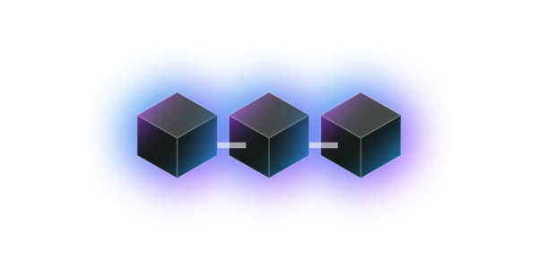
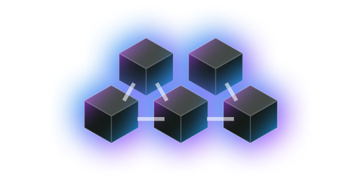

<section class="py-12 md:py-24">
    <div class="container flex flex-col items-center" data-sal="slide-up" data-sal-delay="250" data-sal-duration="500">
        <h2 class="text-headline-xl text-center w-full">Explore your potentials with Camino.</h2>
        <p class="text-body max-w-5xl text-gray-300 mx-auto mb-8 md:mb-16">Camino is a fork of Avalanche. It features 3 built-in blockchains: Platform Chain (P-Chain), Exchange Chain (X-Chain), and Contract Chain (C-Chain). All 3 blockchains are validated and secured by the Camino consortium.</p>
        <div class="md:grid grid-cols-12 gap-8">
            <div class="border-2 border-gray-700 p-4 md:p-8 col-span-4 overflow-hidden rounded-xl mb-4 md:mb-0" data-sal="slide-up" data-sal-delay="500" data-sal-duration="500">
                
                <h3 class="text-headline-sm text-center">P-Chain</h3>
                <p class="text-body text-gray-300 text-center">P-Chain, is used to manage and lock stake, validator, and network coordination</p>
            </div>
            <div class="border-2 border-gray-700 p-4 md:p-8 col-span-4 overflow-hidden rounded-xl mb-4 md:mb-0" data-sal="slide-up" data-sal-delay="750" data-sal-duration="500">
                
                <h3 class="text-headline-sm text-center">C-Chain</h3>
                <p class="text-body text-gray-300 text-center">P-Chain, is used to manage and lock stake, validator, and network coordination</p>
            </div>
            <div class="border-2 border-gray-700 p-4 md:p-8 col-span-4 overflow-hidden rounded-xl mb-4 md:mb-0" data-sal="slide-up" data-sal-delay="1000" data-sal-duration="500">
                
                <h3 class="text-headline-sm text-center">X-Chain</h3>
                <p class="text-body text-gray-300 text-center">P-Chain, is used to manage and lock stake, validator, and network coordination</p>
            </div>
        </div>
        <div class="flex">
            <a href="https://docs.camino.foundation" class="mt-8 button-gradient">
                <svg class="w-6 h-6 mr-2" fill="none" stroke="currentColor" viewBox="0 0 24 24" xmlns="http://www.w3.org/2000/svg"><path stroke-linecap="round" stroke-linejoin="round" stroke-width="2" d="M9 12h6m-6 4h6m2 5H7a2 2 0 01-2-2V5a2 2 0 012-2h5.586a1 1 0 01.707.293l5.414 5.414a1 1 0 01.293.707V19a2 2 0 01-2 2z"></path></svg>
                Documentation
            </a>
            <a href="https://docs.camino.foundation" class="mt-8 button-gradient">
                <svg class="w-6 h-6 mr-2" fill="none" stroke="currentColor" viewBox="0 0 24 24" xmlns="http://www.w3.org/2000/svg"><path stroke-linecap="round" stroke-linejoin="round" stroke-width="2" d="M5.636 18.364a9 9 0 010-12.728m12.728 0a9 9 0 010 12.728m-9.9-2.829a5 5 0 010-7.07m7.072 0a5 5 0 010 7.07M13 12a1 1 0 11-2 0 1 1 0 012 0z"></path></svg>
                Network Status
            </a>
        </div>
    </div>
</section>